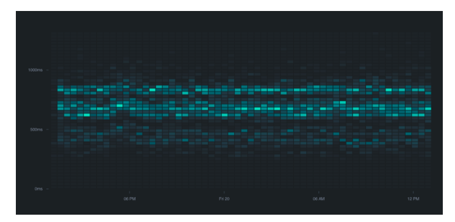

Introducing Apex Ping
I'd like to introduce Apex Ping!
A minimalistic, but
powerful uptime &
performance monitoring service for websites and APIs. In
this post I'll cover
features of Apex Ping, why I chose to build it first,
and a
few things I learned
in the process. In future posts I'll be detailing the
implementation for anyone
who is curious.
I soft-launched Ping about a month ago, built almost
100% on AWS Lambda,
with 500 users it has already detected over a million
errors, and performed
over 25 million checks. Big thanks to the early adopters
who have checked it
out!

The Product
I've seen first-hand how embarrassing it can be when
customers find out
your product is having issues before you do, naturally
this can translate to
customers bailing on your product. Ensuring your site,
app, or API is stable
and performant is critical.
Apex Ping helps by making sure your team is notified
when there's a
performance regression, or when your end-point is
down
or unresponsive.
Often people rely on "it works for me", but Apex
Ping's
reporting can help
uncover the full story.
Powerful Monitoring
Unlike some other uptime monitoring services, which only support HEAD requests, Apex Ping support header fields and bodies as well. This allows you to test APIs, caching behaviour, and serving time, as well as the typical connection latency. The checks listing displays the uptime, mean response, Apdex score, and Adpex score throughout the day, week, or month. The Apdex score generalizes the user experience, summarizing response time satisfaction and error responses.

Checks overview
Global Checks
Requests or "checks" are performed from a number of selectable POPS (Point of Presence), giving you a glance at the customer experience all over the world. Hovering a POP provides you with the breakdown, and coloring indicates their relative health so you can instantly see if a region's availability or performance is degraded.

Geographical view
Latency Distribution
When latency is a reflection of the user-experience, it's important not to ignore the outliers. The Latency view provides you with an intuitive look at distribution throughout the selected time period, where the intensity of the heatmap represents the number of check's within the given duration.

Checks overview
Errors & Apdex
The Apdex (Application Performance Index) score quantifies the user- experience based on a configured target latency. It effectively lets you know how far you are from hitting your mark, you should strive for a perfect 1.0!

IAM Policies
AWS uses IAM policies to permit access to various
operations against
resources, such as allowing read-write access to
DynamoDB.
Up now allows you to specify additional policy
statements for the Lambda
function's role as shown in the following snippet.
Re-deploy and your
permissions are applied !
{
" name" : "myapp",
" lambda": {
"memory": 1024,
"policy" : [
{
"Effect" : "Allow" ,
"Resource" : "*",
"Action": [
"dynamodb: Get*",
"dynamodb: List*",
"dynamodb: PutItem",
"dynamodb: DeleteItem"
]
}
]
}
}
Note that if you previously manually altered the
function policy in the AWS
console, these permissions should be moved to the
up.json .
Static Files for Dynamic Applications
Previously an Up project was either strictly static, or
dynamic—now you can
utilize static file serving for dynamic apps, Up will
check if the file exists
before passing control to your application.
Pass the dir of your static files, with an optional
prefix used on the client-
side for requesting. In the following example
/static/css/stvle.css
would
resolve to
./public/css/style.css .